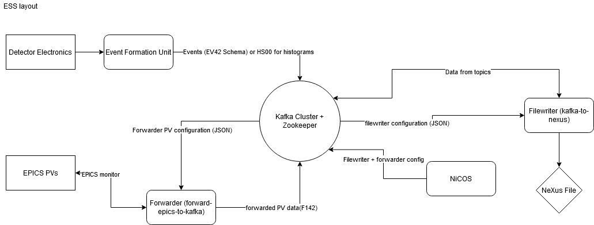
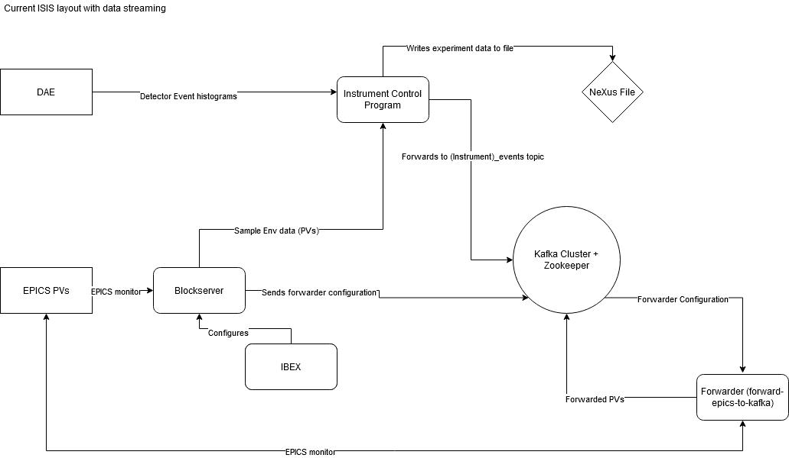
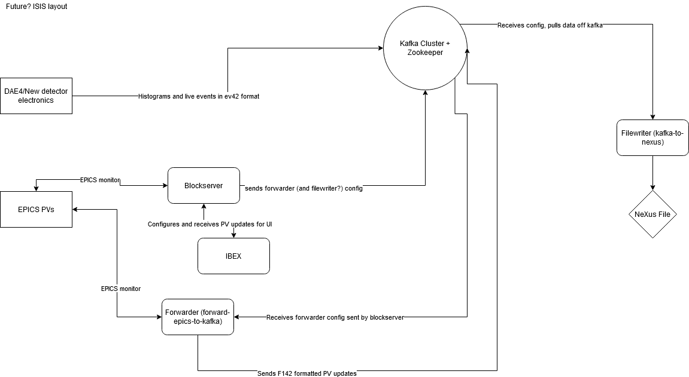

Datastreaming
The datastreaming system is being built as part of in-kind work to ESS. It will be the system that the ESS uses to take data and write it to file - basically their equivalent to the ICP. The system may also replace the ICP at ISIS in the future.
In general the system works by passing both neutron and SE data into Kafka and having clients that either view data live (like Mantid) or write the data to file, additional information can be found here and here.
All data is passed into flatbuffers using these schemas - we have a tool called saluki which can deserialise these and make them human-readable after they’ve been put into Kafka.
The datastreaming layout proposed looks something like this, not including the Mantid steps or anything before event data is collected:

Datastreaming at ISIS
Part of our in-kind contribution to datastreaming is to test the system in production at ISIS. Currently it is being tested in the following way, with explanations of each component below:

The Kafka Cluster
There is a Kafka cluster at livedata.isis.cclrc.ac.uk. Port 31092 is used for the primary Kafka broker.
A web interface is available here.
Important
It was decided that we no longer maintain the Kafka cluster, and it will be handled by the the Flexible Interactive
Automation team. See \\isis\shares\ISIS_Experiment_Controls\On Call\autoreduction_livedata_support.txt for their
support information.
I want my own local instance of Kafka
Neutron Data
The ICP on any instrument that is running in full event mode and with a DAE3 may stream neutron events into Kafka.
This is controlled using flags in the isisicp.properties file:
isisicp.kafkastream = true
# if not specified, topicprefix will default to instrument name in code
isisicp.kafkastream.topicprefix =
# FIA team run their kafka cluster on port 31092, not 9092
isisicp.kafkastream.broker = livedata.isis.cclrc.ac.uk:31092
isisicp.kafkastream.topic.suffix.runinfo = _runInfo
isisicp.kafkastream.topic.suffix.sampleenv = _sampleEnv
isisicp.kafkastream.topic.suffix.alarms = _alarms
SE Data
Filewriting
See File writing
System Tests
Note
These tests are not currently enabled.
Currently system tests are being run to confirm that the start/stop run and event data messages are being sent into Kafka and that a Nexus file is being written with these events. The Kafka cluster and filewriter are being run in docker containers for these tests and so must be run on a Windows 10 machine. To run these tests you will need to install docker for windows and add yourself as a docker-user.
The future of streaming at ISIS
After the in-kind work finishes and during the handover, there are some proposed changes that affect the layout and integration of data streaming at ISIS. This diagram is subject to change, but shows a brief overview of what the future system might look like:
